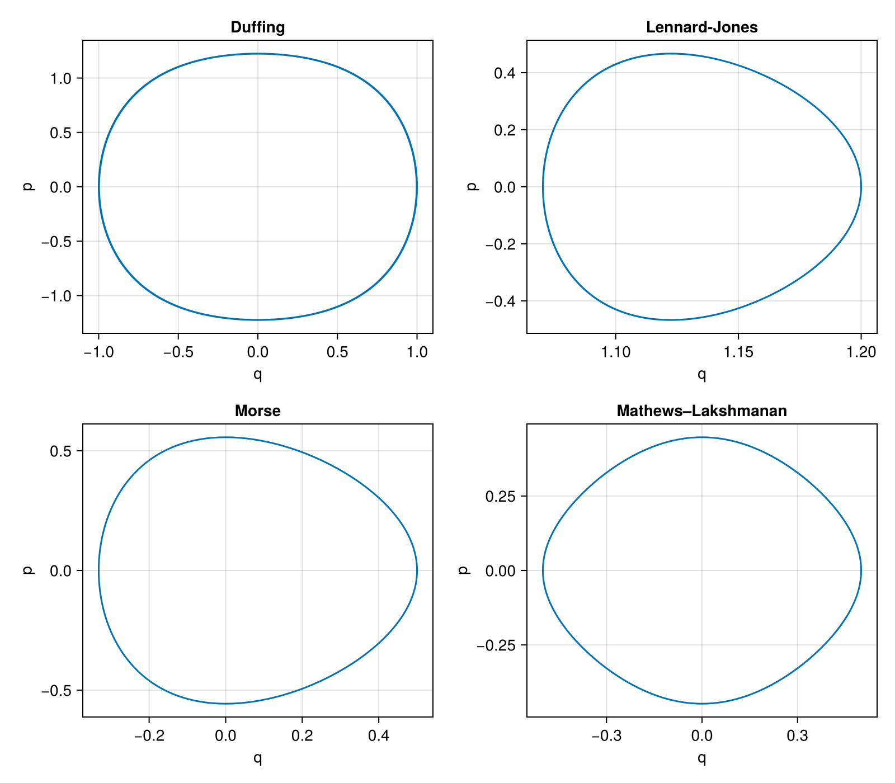

Nonlinear Oscillators
Phase-space trajectories of the four oscillators, obtained by integrating their default Hamiltonian problems:
using GeometricIntegrators: integrate, Gauss
using CairoMakie
import GeometricProblems.DuffingOscillator as duffing
import GeometricProblems.LennardJonesOscillator as lj
import GeometricProblems.MorseOscillator as morse
import GeometricProblems.MathewsLakshmananOscillator as ml
models = [("Duffing", duffing), ("Lennard-Jones", lj), ("Morse", morse), ("Mathews–Lakshmanan", ml)]
fig = Figure(size = (800, 700))
for (i, (name, m)) in enumerate(models)
row = (i - 1) ÷ 2 + 1
col = (i - 1) % 2 + 1
ax = Axis(fig[row, col]; xlabel = "q", ylabel = "p", title = name)
sol = integrate(m.hodeproblem(), Gauss(2))
lines!(ax, sol.q[:, 1], sol.p[:, 1])
end
fig
Duffing Oscillator
GeometricProblems.DuffingOscillator — Module
Duffing Oscillator
The (undamped, unforced) Duffing oscillator is a one-dimensional anharmonic oscillator with a quartic potential. In this conservative form it is an autonomous Hamiltonian system with
\[H(q, p) = \frac{p^2}{2m} + \frac{\alpha}{2} q^2 + \frac{\beta}{4} q^4 ,\]
and Lagrangian
\[L(q, \dot{q}) = \frac{m}{2} \dot{q}^2 - \frac{\alpha}{2} q^2 - \frac{\beta}{4} q^4 ,\]
giving the equation of motion $m \ddot{q} + \alpha q + \beta q^3 = 0$.
System parameters:
m: massα: linear stiffnessβ: coefficient of the cubic force (quartic potential) nonlinearity
GeometricProblems.DuffingOscillator.hodeproblem — Function
Hamiltonian problem for the Duffing oscillator.
GeometricProblems.DuffingOscillator.lodeproblem — Function
Lagrangian problem for the Duffing oscillator.
Lennard-Jones Oscillator
GeometricProblems.LennardJonesOscillator — Module
Lennard-Jones Oscillator
A single particle oscillating in a one-dimensional Lennard-Jones potential,
\[V(q) = 4 \varepsilon \left[ \left( \frac{\sigma}{q} \right)^{12} - \left( \frac{\sigma}{q} \right)^{6} \right] ,\]
with Hamiltonian and Lagrangian
\[H(q, p) = \frac{p^2}{2m} + V(q) , \qquad L(q, \dot{q}) = \frac{m}{2} \dot{q}^2 - V(q) .\]
The potential has its minimum at $q = 2^{1/6}\sigma$; small oscillations about this point are bounded. Only $q > 0$ is physical.
System parameters:
m: massε: depth of the potential wellσ: finite distance at which the potential is zero
GeometricProblems.LennardJonesOscillator.hodeproblem — Function
Hamiltonian problem for the Lennard-Jones oscillator.
GeometricProblems.LennardJonesOscillator.lodeproblem — Function
Lagrangian problem for the Lennard-Jones oscillator.
Mathews-Lakshmanan Oscillator
GeometricProblems.MathewsLakshmananOscillator — Module
Mathews-Lakshmanan Oscillator
The Mathews-Lakshmanan oscillator is a nonlinear oscillator with a position-dependent effective mass, defined by the Lagrangian
\[L(q, \dot{q}) = \frac{1}{2} \frac{\dot{q}^2 - \omega^2 q^2}{1 + \lambda q^2} .\]
The conjugate momentum is $p = \dot{q} / (1 + \lambda q^2)$, and the corresponding Hamiltonian is
\[H(q, p) = \frac{1}{2} \big( 1 + \lambda q^2 \big) p^2 + \frac{1}{2} \frac{\omega^2 q^2}{1 + \lambda q^2} .\]
It exhibits amplitude-dependent (anisochronous for $\lambda \neq 0$) oscillations and is a standard example of a quadratic Liénard-type nonlinear oscillator (M. Lakshmanan and S. Rajasekar, Nonlinear Dynamics, Springer, 2003).
System parameters:
ω: (bare) angular frequencyλ: nonlinearity parameter
GeometricProblems.MathewsLakshmananOscillator.hodeproblem — Function
Hamiltonian problem for the Mathews-Lakshmanan oscillator.
GeometricProblems.MathewsLakshmananOscillator.lodeproblem — Function
Lagrangian problem for the Mathews-Lakshmanan oscillator.
Morse Oscillator
GeometricProblems.MorseOscillator — Module
Morse Oscillator
The Morse oscillator models an anharmonic bond with the potential
\[V(q) = D \left( 1 - e^{-a (q - r_0)} \right)^2 ,\]
with Hamiltonian and Lagrangian
\[H(q, p) = \frac{p^2}{2m} + V(q) , \qquad L(q, \dot{q}) = \frac{m}{2} \dot{q}^2 - V(q) .\]
Trajectories with energy below the dissociation energy $D$ are bound and oscillate anharmonically about the equilibrium $q = r_0$.
System parameters:
m: reduced massD: well depth (dissociation energy)a: controls the width of the wellr₀: equilibrium position
GeometricProblems.MorseOscillator.hodeproblem — Function
Hamiltonian problem for the Morse oscillator.
GeometricProblems.MorseOscillator.lodeproblem — Function
Lagrangian problem for the Morse oscillator.